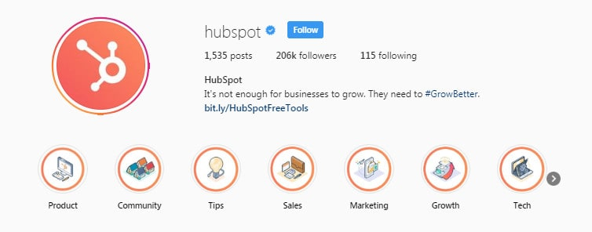
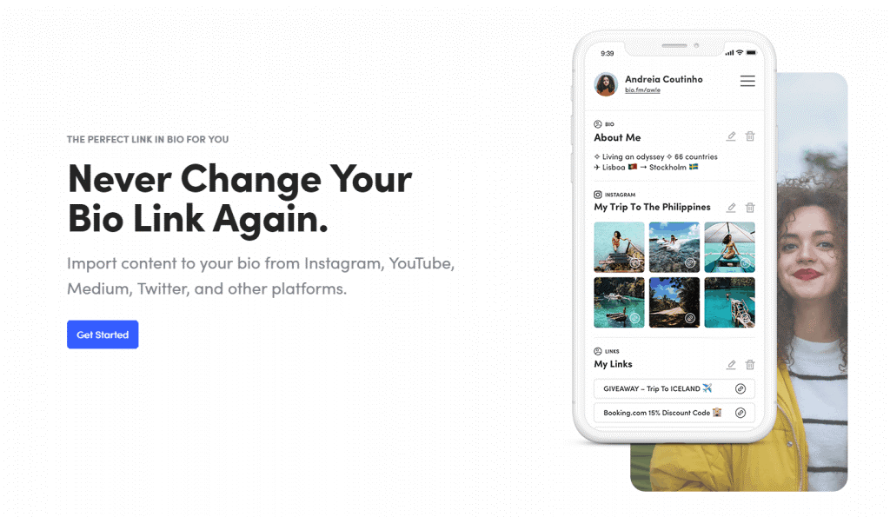
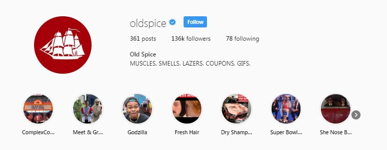
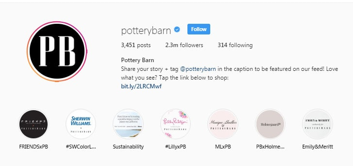
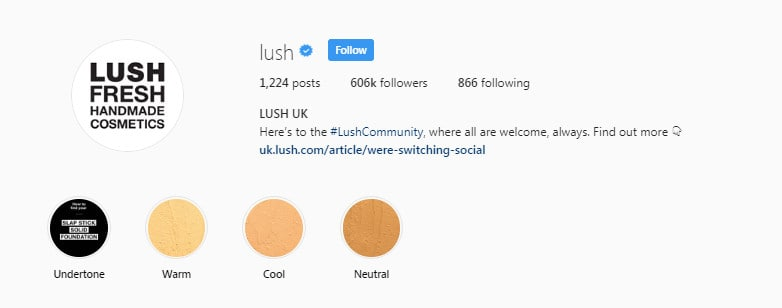
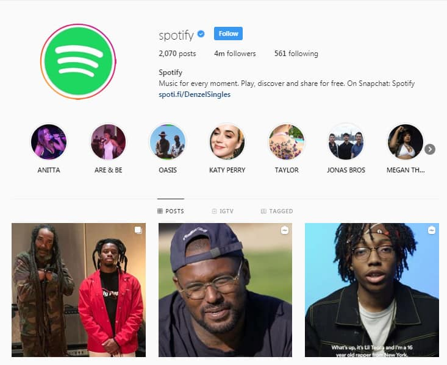
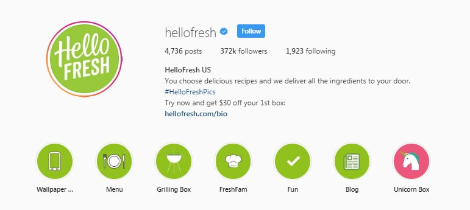

Are you here for some Instagram bio ideas because your bio just isn’t having the right impact?
We’ve all been there.
It’s easy to spruce up your profile picture by editing it on Canva or adding a unique filter. You can even make your account easier to find by picking a name that’s easy to spell and search for. However, when it comes to Instagram bios – the 150 characters of information that tells people what to expect from your brand, the mind has a habit of going blank.
Now that 80% of Instagram users are following at least 1 business, you can’t afford to take risks with the impression that your bio makes. Get this one little thing wrong, and you could send your followers running in the opposite direction.
Fortunately, Instagram bios don’t have to be the complex mystery that you think they are.
The truth is, there are plenty of fun and interesting ways to spruce up your home page and get people involved in deeper connections with your brand.
Here are our top Instagram bio ideas to get you started.
Top 8 Instagram Bio Ideas
1. Make Your Value Abundantly Clear
Thanks to the rise of the digital world, a physical shop-front, and business card aren’t the only way to introduce people to your company anymore. Instagram bios can also have a resounding impact on how people think and feel about your organization. That’s why it’s essential to quickly, clearly and concisely outline what makes you special.
Take a look at HubSpot’s bio, for instance:

In just a few words, Hubspot outlines their commitment to helping companies grow. There’s a branded hashtag #GrowBetter to encourage user-generated content, a range of unique highlights sharing valuable content, and a handy bit.ly link too. HubSpot is proof that an Instagram bio doesn’t need to be long to be effective. Ask yourself:
- What’s the USP of your business, and how can you convey it in a concise way?
- How can you encourage engagement with your audience instantly: e.g., Using hashtags, highlights, and a link to your most valuable pages.
- Where can people learn more about your company: e.g., clicking on your link or contact options, or even checking out your Stories Highlights.
2. Expand Your Instagram Bio Link
Not everyone can refine the nature of their business into a few words like HubSpot. Unfortunately, Instagram has a significant flaw for marketers to deal with these days. You only have 150 characters to work with, and you only get a single link to drive people back to other content on your site.
Since you can’t add extra words to your Instagram bio, the only way to expand it is to make the most out of that single link. You can do this with a tool like Bio.fm.

Primarily, Bio.fm is a handy Instagram bio idea that allows you to promote multiple things at once with one link, so you don’t have to keep switching out the URL on your profile. It also allows you to make your Instagram posts clickable, so people can track down the products in their favorite images or find out more about one of your recent videos.
You can also sync Bio.FM with other social profiles, adding your latest Pins from Pinterest and YouTube videos to the mix. It’s an excellent way to align your entire social strategy.
3. Show Your Personality
Making the most of your Instagram bio isn’t just about driving people to your website or letting people know what you do. You also need to make sure that people understand who you are and why you’re different from the competition. This is your chance to let your unique personality shine through.
Take a look at the Old Spice Instagram page, for instance. If you’ve been following the Old Spice advertising campaigns on other social media channels and your TV, you’ll know that this is a company all about fun. The branded profile image on the company’s account lets you know you’re dealing with the real company, as does the verified tick. However, the bio text “MUSCLES. SMELLS. LAZERS, COUPONS, GIFS” highlights the playful nature of the brand.

Even better, this bio also tells followers precisely what they can expect if they stay tuned to the Old Spice page.
The compelling Instagram Bio above from Old Spice is just another example of how brands can align their personalities across all social media channels to develop deeper connections with their audience.
4. Speak your Customer’s Language
You probably already know that there are a lot of different people using Instagram these days, and they’re not all online looking for the same thing. The more you know about your target audience, the easier it will be to craft a bio that really speaks to the right people. For instance, while some people will be looking for professionalism in the companies that they connect with on Instagram, others will be looking for a more friendly and playful attitude.
For instance, a great way to speak your customer’s language if you know you’re dealing with a younger audience is to embed emojis into your Instagram bio. Check out Divinity LA Bracelets, for instance. They use emojis in their Bio to reinforce their values. For example, they use a hand for handcrafted, the planet earth to represent their sustainable strategies, and hearts to show their passion.
Remember to make sure that you understand what each emoji you’re using means before you place it on your bio, however. The last thing you want to do is make the wrong impression by using an image with an underlying negative meaning.
It’s also worth splitting your emojis up by getting the layout of your Instagram bio right too. Remember that it pays to use separate lines on the page to make different points when you can.
5. Make the Most of Hashtags In Your Instagram Bio
Hashtags are one of the most valuable features on Instagram – and they’re not just for your posts and Stories either. Using hashtags is a great Instagram bio idea too that can help you to develop stronger connections with your target audience and let them know what they can expect from your account. Additionally, if you include a branded hashtag on your bio, you could even encourage your followers to help you build out your profile with user-generated content.
For instance, if you visit the Pottery Barn page on Instagram, you’ll notice that the company actively encourages followers to take part in sharing their own interior design ideas by tagging @PotteryBarn in the caption. In the past, the brand has also used branded hashtags to the same effect, like #MyPotteryBarn. You can still find people using that tag today.

Choose the right hashtag, and you’ll develop a considerable backlog of user-generated content that you can turn to whenever you’re looking for inspiration, or you need to show your audience how much you value their input. Additionally, you can also use the UGC created by your followers as social proof, reminding future customers that you’re a credible and trustworthy brand.
6. Keep your Audience Informed with Highlights
One of the best things you can do with your Instagram bio is to teach your customers everything they need to know about your business. Often, it’s challenging to do this when you only have about 150 characters to work with and just one link. That’s why countless brands have begun taking advantage of a newer feature on Instagram called “Highlights.”
Highlights are saved stories that appear at the top of your Instagram feed, just below your Bio. Most companies regard these little icons to be extensions of the Instagram Bio and use them to share things like customer testimonials, information about new product lines, and more. For instance, if you visit the Lush UK page on Instagram, you’ll see a handful of Highlights showcasing their latest makeup range.

Notice that Lush also have their own #Lush Community hashtag included in their Instagram Bio too, to help generate extra user-generated content.
Another way that you can help users to learn about you through your Instagram Bio is by including contact buttons that give your followers an easier way to reach out to members of your team. This is a feature that’s only available for people with a business profile on Instagram, so it’s worth switching away from personal profiles if you haven’t done so already.
7. Draw Attention to New Promotional Offers
If you want to make the most out of your Instagram Bio link, but you’re not interested in using a tool like Bio.FM, then the best thing you can do to educate and inform your audience, is provide them with plenty of fresh new links week after week. This is a great way to draw attention to some of the more recent offers that you’re running in your company, or the new products that you have for sale.
For instance, the Music Streaming company, Spotify regularly changes up its Bio link with new content depending on the artist that it’s featuring at any given time. For instance, when they were focusing on David Bowie, their link was Spot.fi/DavidBowie, and they filled their Instagram news feed with pictures of Bowie too.
Now the focus goes to Spoti.fi/DenzelSingles, complete with interesting videos from IGTV, slideshows, and other useful content to help the company make the most of their new promotion. It’s timely promotional strategies like this that make Spotify such a popular company to follow on Instagram.

Interestingly, because Spotify links users to a web player, rather than a home page or landing page, Spotify also makes sure that users can start getting a feel for the service as quickly as possible. It’s a great way for people who aren’t familiar with Spotify to see for themselves how easy and intuitive the interface can be.
8. Create a Powerful Instagram Bio Call-to-Action
Just like any other marketing campaign, the purpose of your Instagram profile isn’t just to share beautiful pictures with the world. It’s about making your audience act. It’s not enough to just tell people what you do and include a bio link hoping that they’ll click through to your website. You also need to use basic marketing principles to convince people that they should be clicking on that link. For instance, look at how @HelloFresh motivates customers to visit their website with the guarantee of $30 off their first order.

When you’re designing the ultimate Instagram bio, it’s essential to think about how you can convince your audience to take the next step in their relationship with your brand. In HelloFresh’s bio above, you can see that audience members get everything they need to make an informed decision about working with and following the company.
There are highlights that include insights into the kind of menu that you can get when you subscribe with HelloFresh, snippets from the company’s blog, and even a branded hashtag #HelloFreshPics, where people can send int heir user-generated content.
Combine all of that useful information with a free offer, and it’s no wonder that HelloFresh customers go streaming back to the company’s website from their Instagram feed.
Pro tip: If the link you’re using in your bio isn’t as compact as the one from Hello Fresh above, make sure that you use a link-shortening tool, so you don’t scare your customers off.
Creating Your Instagram Bio
Instagram bios are something that many businesses take for granted when they’re setting up their new social media presence. However, the truth is that just like your profile picture and the content you share, your bio has a powerful role to play in the way that people interact with your brand on social media. Within 150 characters, you’ll need to tell your followers all about what your business does and convince them that your company is valuable enough to deserve their attention.
While there’s no one-size-fits-all strategy for the perfect bio, the Instagram bio ideas above will set you off on the right track to creating a fantastic profile for your Instagram campaign. Remember, subscribe with SocialFollow for more insights on how to make the most of your Instagram strategy.